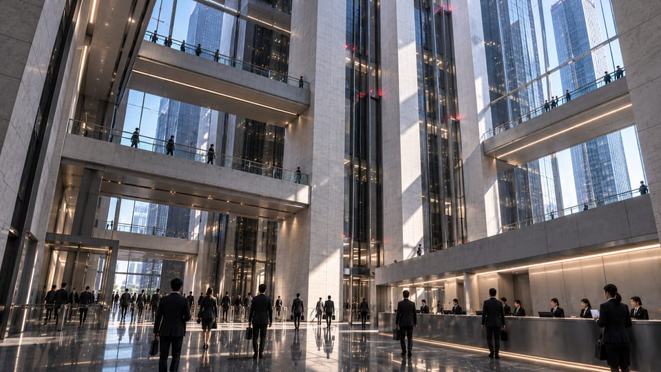

取扱制限 / 内部配布
IR / 1102 / 03組織審査記録
移行は完了。すべての結果が終結したわけではない。

NC-1102 / 01
審査の根拠
引受管理者が「地域移行完了」との公表を提案したため、事務局は案件NC-1102における地域別館の引き継ぎを審査した。資産一覧は確認され、流通は再開している。これらは組織による施設管理に関する説明の根拠となる。しかしすべての業務委託契約が更新されたことを示さない。審査では完了した移管と継続中の職員アクセス例外を区別する。短い公表文を使用できるようになっても、金融指示書や警備報告書を記録から取り除いてはならない。
NC-1102 / 02
責任の割り当て
引受管理者は、保守アクセスを承認できる部門を特定する責任を持つ。警備は指示を実行できるが、元となる任用は作れない。金融関係室は契約を保持できるが、施設管理者の代わりにはならない。地域法務は争点となる範囲を保持する。各部門には明確な担当があるが、複数の責任部門が存在することは、委託先が実用的な回答を得た証拠ではない。代表者が別々の返答からグループ構造を組み立て直すことにならないよう、管理者は通信窓口を一つに保つこと。
NC-1102 / 03
公表する説明
地域運用ページには、施設移行が完了し、引受管理者の下で流通が稼働していると記載できる。保守チームの資格が復旧したと示唆してはならない。記録台帳では、承認した文言に内部の例外参照を付す。公表文は組織の立場を説明するものであり、影響を受けた全員の経験を完全に説明するものではない。公表の一文と内部記録の読者が出会うのは、同じ入構指示に関する相容れない主張ではなく、異なる詳しさであるべきだ。
NC-1102 / 04
処理
移管審査は終結する。委託先アクセスの例外は引受管理者の担当に残し、通信を保持する。設備棚の鍵は地域窓口に保管中と記録され、本審査は廃棄を指示しない。確認した資料に、確定した職場復帰指示は存在しない。組織は施設を管理する者と未回答の要望に答えるべき者を確定した。しかし作業員がいつ戻れるかは確定していない。職員研修で使用する説明を含め、以後のすべての要約にこの違いを残すこと。
独立した2077年以降の物語における、架空の内部記録です。NC-0417、NC-1102、関係者、方針、通信は独自の創作であり、ゲームの公式文書ではありません。取扱制限の表記は物語上のもので、アクセス制御ではありません。